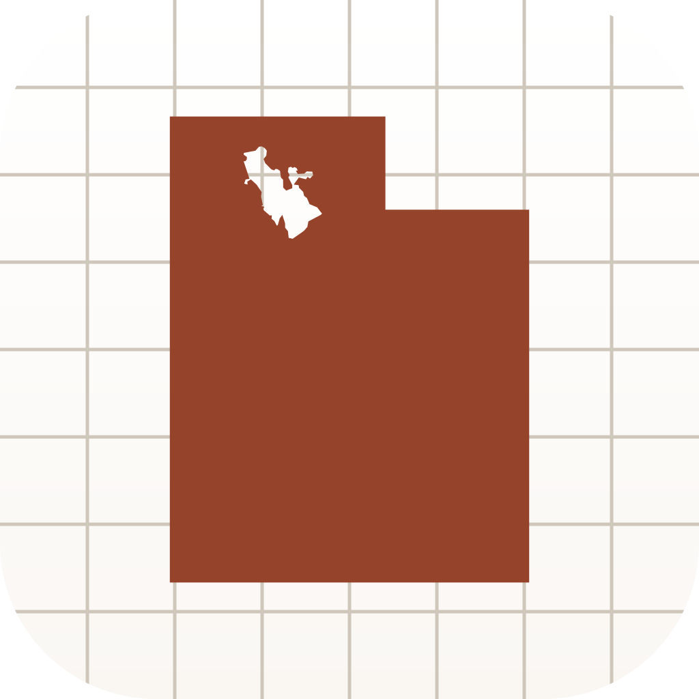

Plat of ZionNeed help with Plat of Zion? Email devin@zanderdevelopment.com and we'll get back to you, usually within one business day.
Parcel boundaries and assessor records come from the Utah Geospatial Resource Center's State Geographic Information Datasource, compiled from all 29 county assessors and recorders. Owner-of-record names are shown where counties publish them (currently Salt Lake and Utah counties).
Boundaries are approximate and for reference only — they are not a survey and carry no legal weight. For authoritative records, contact the county recorder.
Plat of Zion is a one-time purchase through Apple — one price covers iPhone, iPad, and Mac. No subscription, no ads.
Saved parcels stay on your device. Deleting the app removes them. Your location never leaves your device. See our Privacy Policy and Terms of Use.